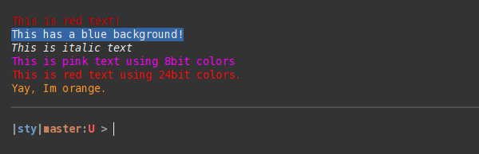

Desccription¶
Simple, flexible and extensible string styling for your terminal. Supports 3/4bit, 8bit and 24bit (truecolor, rgb) colors. Should work on most Unix platfroms with most terminals. Recent versions of Windows 10 should work with this as well.
Sty comes with default color palettes and renderers, but you can easily replace/customize them, without touching the markup.
Sty’s goal is to provide Python with a little string styling markup, which is decoupled from color palettes and terminal implementations.
Sty has no dependencies.
If you run into compatibility problems with sty, please file an issue!
Code Example¶
from sty import fg, bg, ef, rs, RgbFg
foo = fg.red + 'This is red text!' + fg.rs
bar = bg.blue + 'This has a blue background!' + bg.rs
baz = ef.italic + 'This is italic text' + rs.italic
qux = fg(201) + 'This is pink text using 8bit colors' + fg.rs
qui = fg(255, 10, 10) + 'This is red text using 24bit colors.' + fg.rs
# Add new colors:
fg.set_style('orange', RgbFg(255, 150, 50))
buf = fg.orange + 'Yay, Im orange.' + fg.rs
print(foo, bar, baz, qux, qui, buf, sep='\n')
The code above will print like this in the terminal:
